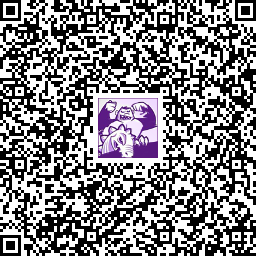
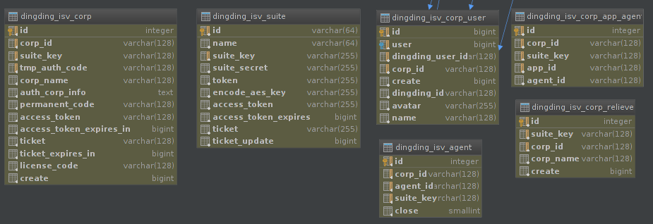
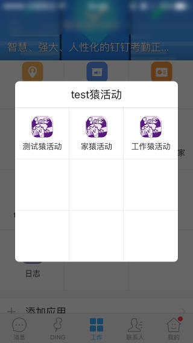

钉钉 ISV 应用开发的一些心得
1. 背景
前段时间从前到后完整地做完了一个简单的钉钉上的 ISV 应用 —— 猿活动。
最开始想做这么一个小工具，是想到，平时部门中经常会组织一些分享活动，但是这些分享活动却没有一个比较直观的“站点”来记录一次又一次的，很多人的努力的付出，这是很可惜的事。同时，在做这些活动的时候，也缺少一些互动的手段，比如现场签到，打赏什么的。
好吧，刚开始的时候是这样想的，当然，在做的过程中，也发现钉钉的基于“组织”的应用场景，在某些情况下限制挻大的（比如现场的交互，因为到现场的人并不一定是某个“企业”的成员），所以功能上也简化了很多。（其实真相是只有 3 个周末时间，只能先搞出目前这些简单功能了）
中间在做的过程中碰到了另一个朋友，他有一些想法，并且自己也尽力做了很多工作，就差个程序员。我见功能很简单（就是最简单的文章呈现功能），就帮他做出来了。之后，我也随便把他的这块内容管理功能，及我之前想的活动相关的功能，合在一起，变成了现在这个应用的样子了。
http://ape.fgt.im 这个页面中的 5 张图就把这个小东西的功能说完了。

有兴趣的，可以扫描上面的二维码安装试试看（需要企业管理员权限才能安装应用）。
技术方面，前后端是完全分离的。
后端用 Python 写的，一套东西是 tornado 和 sqlalchemy 。代码在：TODO
前端是 AngularJS 那套，代码在：TODO （前端代码目前跟我工作上的业务代码是一起的，对外就不方便了哈，以后有机会拆出来我再回来补吧）
其实还有另外一套东西，扫码登录的那个简单后台，也是一个单独的前端项目（配合约定的后端服务的格式工作），代码在：TODO （代码目前跟我工作上的业务代码是一起的，对外就不方便了哈，以后有机会拆出来我再回来补吧）
2. 做一个套件与做 N 个套件没区别
先说第一点心得。这方面你应该已经理解 ISV 中的套件是如何工作的了，如果不清楚，可以先看看：
- 钉钉手机端应用获取当前用户信息流程 https://www.zouyesheng.com/dingding-userinfo.html
- 钉钉 ISV 接入流程 https://www.zouyesheng.com/dingding-isv.html
一般我们最开始来做一个套件时，会习惯性地把套件相关信息（ suite_key, suite_secret, token 等）作为配置写到配置文件当中。最开始我也是这样干的。但是在对接流程时，这样我经常会有非常别扭的感觉。原因是，除了套件本身的信息，在 ISV 的授权流程当中，企业相关的信息，你还是得作一般化的，比较正式的持久化处理，因为会有 N 个企业用到你的套件，每个企业都有自己的一套“配置信息”。简单来说，企业这套信息你要放到关系数据库的表中保存。
再者钉钉的应用场景一般是基于“组织”的，也就是说你的业务数据模型中，“企业”一定是一个独立的实体（很多业务的实体表中，都会有一个“企业”的外键）。
现在，“企业”已经是一个连接业务流程，跟钉钉授权流程的一个中间角色了。再细想钉钉的授权流程，企业的授权对象，是“套件”，而企业的授权状态本身有多种，这也是一个需要在记录的东西。到这里，其实已经能看出来，如果在数据模型中没有“套件”这个实体，已经会让人不舒服了。
更进一步，套件本身还有近 10 个属性，而且有几个属性还是动态的。（这跟你接一个统一的用户系统，只在相关表中记一个用户 ID 完全不是一回事了）
与其在配置文件中写死套件的几属性，再搞个缓存系统什么的去维护这个套件另外几个属性，同时忍受数据模型中因为没有“套件”这个实体的不完整感：
你就专门为套件建一个表，每个套件作为一条记录来维护相关信息，是一个更直观，更经济，更灵活的处理方式。
而多出“套件”这个维度的代价，仅仅受限在 ISV 授权流程中，并不会蔓延到你的业务流程中去，因为你的业务流程只关注这是哪个企业的数据，而不关心它到底是从哪个应用来的。
我用 6 张表处理 ISV 授权的流程数据：

dingding_isv_corp_relieve是企业取消授权时的一个历史记录。dingding_isv_corp_app_agent是app_id与agent_id的对应关系，这在获取企业授权之后，通过服务端服务可以查询到，并且在激活应用时需要用到相关信息，在 jsapi 签名响应时也需要响应agent_id信息。dingding_isv_agent这个记录企业中的agent的状态。
把套件作为单独是的实体在系统中处理之后，创建套件本身就是一个随手的事了。
- 新建一条记录，填上新建套件的
token和aes_key。 - 新建套件的回调地址中，需要标识套件。（用参数或写在路径中，我是写在路径中的，比如 http://ape.fgt.im/dingding-isv-callback/SUITE）
成功创建套之后，再把 suite_key 等信息补到数据库中就好了。
这一步开发出的，随时随手创建套件的能力，为之后我们的调试提供了巨大的方便。
整个流程的视频演示：
（优酷没有 HTTPS 的支持，视频在 http://v.youku.com/v_show/id_XMTY1MjI4ODMzMg==.html）
3. 使用 SSH 远程转发调试后端
这算是所有跟公网回调相关的场景的标准处理方式了吧，以前做微信的公众号开发时就这样干的。
简单来说，像钉钉的推送这种，它需要访问公网机器，并且之后的调试你也不方便在手机上作静态的 DNS 设置，这在开发时是比较不方便的，直接登录服务器写代码毕竟没有自己本地机器舒服。
所以我们想到的一个办法，就是通过代理把远端服务器上的访问导到本机。而这种远端转发的能力，是 SSH 自带的。两步就可以了：
- 在
sshd的配置中（比如/etc/ssh/sshd_config）添加：这让客户端可以指定转发端口。GatewayPorts clientspecified
- 然后本机启：
就是把到达远端任意网卡的 9000 端口访问都转到本机的 8888 端口上来。这样我们本机服务启到 8888 上就可以正常响应钉钉服务器对公网机器的访问了。
ssh -R 0.0.0.0:9000:localhost:8888 root@host
更多的细节可以参考： http://www.ibm.com/developerworks/cn/linux/l-cn-sshforward/
4. 为各个环境创建利于前端调试的应用
因为是前后端代码完全分离的结构，所以前端的调试上需要稍微单独设计一下。前后完全分离，就是后端除了渲染一个页面（里面会加载前端资源）之外，剩下的全是响应 json 的服务。
之前开发 PC 上的页面是，我们的做法是本地启一个静态 Web 服务就好了，后端资源的地址前端随意控制的。这样我改前端代码，直接在浏览器刷新就能看到效果，调试很方便。
但是换到做钉钉的移动端页面时，情况有点不同，就是登录流程及钉钉的 jsapi 部分。业务上的登录流程需要在钉钉环境才能完成，单独的浏览器环境无法登录（当然你可以单独做另一套登录机制）。钉钉的 jsapi 部分在单独的浏览器上更没办法。
所以，我们需要在钉钉上调试。这方面，最简单直接的办法就是让钉钉扫二维码来打开指定页面（同网内部地址都可以）。不过在登录上有个小问题，就是 corp_id, app_id 这些参数，为了登录流程正常完成，你可能总是需要自己把这些参数写死加上之后，再生成二维码让钉钉来扫。（而为了找这些参数，可能你总是需要多次登录管理后台，相信我，这事一点也不有趣）
“开发体验”对心情的影响是很重要的，也效率的影响也是极大的，我希望的环境是打开电脑写完代码就能看到结果，还要去找参数，还去拼地址，还去生成二维码，还去扫码，太麻烦。
我现在的作法是，直接创建一个为开发调试而用的套件，里面又为各个前端环境创建不同的应用（比如CDN测试环境，公司时的本机环境，家里时的本机环境）。这样，我只需要本机启一个静态 Web 服务器（本机 IP 相对是固定的），改完前端代码，在钉钉中直接打开相应的应用就可以了，其它事都不用管，世界清静了。
